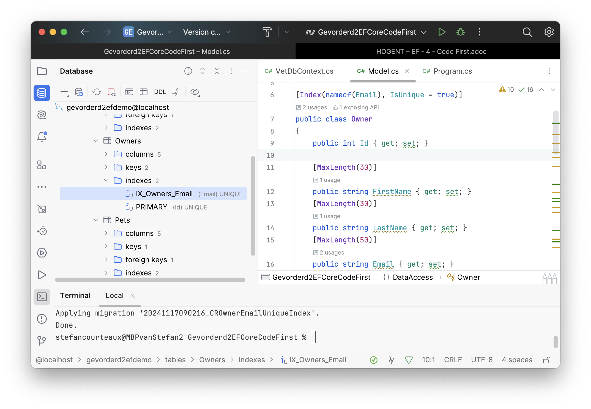
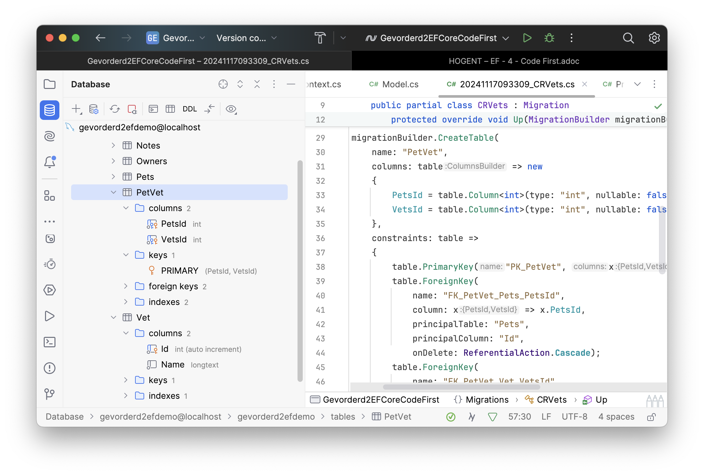

EF Core Migrations
Doel
-
Verschil begrijpen tussen SQL First en Code First.
-
Entity Framework Core (Code First) Migrations leren gebruiken.
Inleiding
In de vorige lessen hebben we een databank opgezet en vervolgens, met behulp van EF Core, een volledige Data Access Layer gegenereerd. We hebben eerst SQL geschreven, en dan C# gegenereerd. Dat is de SQL First aanpak.
Je kan ook in de omgekeerde richting werken: eerst een DAL schrijven in C# en dan SQL (DDL) genereren. Dat is de Code First aanpak.
Concreet Voorbeeld
We bouwen (een deeltje van!) een informatiebeheersysteem voor dierenartsen.
Beschouw onderstaand klassendiagram.
-
Een
Owner(Eigenaar) kan een aantal huisdieren (Pets) hebben. -
Een
Pet(Huisdier) kan een aantal notities (Notes) hebben.
Om de scope beperkt te houden, introduceren we geen noemenswaardige business logica in deze klassen. De applicatie zal gewoon alle data inlezen uit de databank en op de command line dumpen.
Databank
Gezien deze les niet rechtstreeks verbonden is aan de StoreFront app, is het een goed idee deze scheiding ook op databaseniveau te maken.
CREATE SCHEMA "Pets";| Indien je EF Core voorziet van een SQL user die schema’s kan maken, zal EF Core he schema impliciet aanmaken indien het niet bestaat. |
.Net
We bespreken een concreet voorbeeld, dus we gaan een beetje C# moeten schrijven.
Project Opzetten
dotnet new console -o Gevorderd2EFCoreCodeFirstdotnet add package Npgsql.EntityFrameworkCore.PostgreSQLdotnet add package Microsoft.EntityFrameworkCore.DesignZelf DbContext Schrijven
In de SQL First aanpak heeft EF Core voor ons de DbContext en alle relevante klassen gegenereerd. Nu we in de omgekeerde richting werken, gaan we zelf de DAL moeten programmeren.
public class Owner (1)
{
public long Id { get; set; } (2)
[MaxLength(30)] (3)
public string FirstName { get; set; }
[MaxLength(30)] (3)
public string LastName { get; set; }
[MaxLength(50)] (3)
public string Email { get; set; }
public List<Pet> Pets { get; set; } (4)
}
public class Pet
{
public long Id { get; set; } (2)
[MaxLength(30)] (3)
public string Name { get; set; }
public DateTime DateOfBirth { get; set; }
public DateTime? DateOfDeath { get; set; } (5)
public Owner Owner { get; set; } (4)
public List<Note> Notes { get ; set; } (4)
}
public class Note
{
public long Id { get; set; } (2)
[MaxLength(2000)] (3)
public string Content { get; set; }
public DateTime CreationDate { get; set; }
public Pet Pet { get; set; } (4)
}| 1 | Maak een klasse voor elk type (zie klassendiagram). |
| 2 | Voorzie een Id veld dat zal dienen als Primary Key. |
| 3 | Gebruik [MaxLength(n)] attributen op string voor database-efficiëntie. |
| 4 | Definieer relaties impliciet door props van een ander type uit het model te gebruiken. |
| 5 | Optioneel veld. |
using Microsoft.EntityFrameworkCore;
namespace Gevorderd2EFCoreCodeFirst.Storage;
public class VetDbContext : DbContext (1)
{
public DbSet<Pet> Pets { get; set; } (2)
public DbSet<Owner> Owners { get; set; } (2)
public DbSet<Note> Notes { get; set; } (2)
// In een volwaardige web api zal je
// - de context aanmaken voor DI,
// - de connectionstring uit config lezen.
// Zie "StoreFront" voorbeeldcode.
protected override void OnConfiguring(DbContextOptionsBuilder options)
{
options.UseNpgsql( (3)
"Server=localhost;Port=5432;Userid=admin;Password=secret;Database=pg2db",
builder => builder.MigrationsHistoryTable(
"__EFMigrationsHistory","Pets") (4)
);
}
protected override void OnModelCreating(ModelBuilder modelBuilder)
{
modelBuilder.HasDefaultSchema("Pets");(5)
}
}| 1 | Erf over van DbContext. Dit hookt de code in EF Core. Anders gaat het niet werken. |
| 2 | Maak een DbSet voor elk type uit het model. |
| 3 | In productiesoftware zal je de connection string elders bewaren (zie vorige lessen). |
| 4 | Locatie van de EF Core housekeeping tabel. |
| 5 | Schema waarin tabellen zullen geplaatst worden. |
Migrations
EF Core kan C# programma’s genereren die definiëren wat er in de structuur van de databank aangemaakt, of verwijderd, moet worden. Zo een programma heeft een Migration.
Wanneer je een migration uitvoert, worden er at runtime SQL DLL-statements gegenereerd en uitgevoerd.
Eerste Migration
Maak een eerste Migration. Op dit moment bestaan er nog geen tabellen in het databankschema, dus de delta (=het verschil) met de DbContext is op dit moment allesomvattend. De migration zal alles wat beschreven staat in de DbContext bevatten.
dotnet ef migrations add InitialCreate --output-dir Storage/Migrations| "InitialCreate" is een vrij te kiezen naam. Dat, of een variatie op het thema zoals "Initial" en "Init", is niet meer dan een veelgebruikte naam voor de eerste migration. |
De migration verschijnt als C# code in het project.
. ├── Gevorderd2EFCoreCodeFirst.csproj ├── Model │ └── Model.cs ├── Program.cs └── Storage ├── Migrations │ ├── 20260326094007_InitialCreate.Designer.cs │ ├── 20260326094007_InitialCreate.cs │ └── VetDbContextModelSnapshot.cs └── VetDbContext.cs
Lees de code van de .cs file diagonaal. Indien je niet tevreden bent, kan je de laatste migration verwijderen.
dotnet ef migrations removeOm de nog niet uitgevoerde migrations toe te passen op de database, voer je onderstaand statement uit.
dotnet ef database updateMerk op dat er een tabel gemaakt werd voor Owners, Pets en Notes.
select table_schema, table_name from information_schema.tables where table_schema = 'Pets' +------------+----------+ |table_schema|table_name| +------------+----------+ |pets |__efcore | |pets |Owners | |pets |Pets | |pets |Notes | +------------+----------+
De DbContext die we schreven is voldoende helder voor EF Core om automatisch Primary Keys en Foreign Keys te voorzien.
In de EFCore tabel zal het systeem bijgehouden welke migrations toegepast werden op de huidige database.
Volgende Migrations
De kans dat je (database) model nooit meer verandert, is bijzonder klein. EF Core biedt ondersteuning voor het genereren van opeenvolgende migrations.
public class Owner
{
//...
[MaxLength(16)]
public string PhoneNumber { get; set; }
//...
}
//...
public class Note
{
//...
[MaxLength(5000)]
public string Content { get; set; }
//...
}dotnet ef migrations add CRFieldUpdateEr verschijnt een tweede migration bestand in het project.
Breng de database up to date.
dotnet ef database updateDe __EFMigrationsHistory tabel wordt geupdatet wanneer de operatie slaagt.
SELECT * FROM Pets.__EFMigrationsHistory;We verwachten twee entries.
Terugdraaien Migration
Zou deze laatste migration ook gewerkt hebben moest er al data in het systeem gezeten hebben? Laten we dat eens testen.
- Methodologie
-
-
Databasestructuur terugdraaien naar de vorige migration.
-
Test data inserten.
-
Laatste migration terug uitvoeren.
-
dotnet ef database update InitialCreate
SELECT * FROM Pets.__EFMigrationsHistory;
We verwachten enkel de eerste migration.
insert into "Pets"."Owners" ("FirstName", "LastName", "Email")
values ('Test', 'TestLast', 'tist@test.com');
insert into "Pets"."Owners" ("FirstName", "LastName", "Email")
values ('Test2', 'TestLast2', 'tist2@test.com');
insert into "Pets"."Pets" ("Name", "DateOfBirth", "OwnerId")
values ('Felix', '2010-09-13', 1);
insert into "Pets"."Pets" ("Name", "DateOfBirth", "OwnerId")
values ('Fifi', '2011-09-13', 2);
insert into "Pets"."Pets" ("Name", "DateOfBirth", "OwnerId")
values ('Coco', '1990-09-13', 1);
insert into "Pets"."Notes" ("Content", "CreationDate", "PetId")
values ('Een gans verhaal over de trauma`s van Fifi.', current_timestamp, 2);
insert into "Pets"."Notes" ("Content", "CreationDate", "PetId")
values ('We gaan een hondenfluisteraar nodig hebben.', current_timestamp, 2);
insert into "Pets"."Notes" ("Content", "CreationDate", "PetId")
values ('Coco is nog piraat geweest. Wilde verhalen!', current_timestamp, 3);dotnet ef database updateHet werkt. De databank hoeft niet leeg te zijn om een Migration uit te kunnen voeren.
select o."FirstName", p."Name", p."DateOfBirth", n."Content"
from "Owners" o
left outer join "Pets" p on p."OwnerId" = o."Id"
left outer join "Notes" n on n."PetId" = p."Id"
+---------+-----+---------------------------------+-------------------------------------------+
|FirstName|Name |DateOfBirth |Content |
+---------+-----+---------------------------------+-------------------------------------------+
|Test |Felix|2010-09-13 00:00:00.000000 +00:00|null |
|Test2 |Fifi |2011-09-13 00:00:00.000000 +00:00|We gaan een hondenfluisteraar nodig hebben.|
|Test2 |Fifi |2011-09-13 00:00:00.000000 +00:00|Een gans verhaal over de trauma`s van Fifi.|
|Test |Coco |1990-09-13 00:00:00.000000 +00:00|Coco is nog piraat geweest. Wilde verhalen!|
+---------+-----+---------------------------------+-------------------------------------------+Logica
Schrijf een beetje eenvoudige logica om interactie met de gegenereerde database te testen.
using var db = new VetDbContext();
var ownersWithPetsAndNotes = db.Owners
.Include(o => o.Pets)
.ThenInclude(p => p.Notes);
foreach (var owner in ownersWithPetsAndNotes)
{
Console.WriteLine($"{owner.FirstName} {owner.LastName}, {owner.Email}");
foreach (var pet in owner.Pets)
{
Console.WriteLine($"> {pet.Name} {pet.DateOfBirth}");
foreach (var note in pet.Notes)
{
Console.WriteLine($" > {note.Content}");
}
}
Console.WriteLine("---");
}Test TestLast, tist@test.com > Felix 13/09/2010 00:00:00 > Coco 13/09/1990 00:00:00 > Coco is nog piraat geweest. Wilde verhalen! --- Test2 TestLast2, tist2@test.com > Fifi 13/09/2011 00:00:00 > Een gans verhaal over de trauma's van Fifi. > We gaan een hondenfluisteraar nodig hebben. ---
Complexere Scenario’s
Beknopte academische voorbeelden leiden veelal, by design, tot een elegante, harmonieuze, werkende oplossing. Laten we toch even de grenzen verleggen met iets complexere scenario’s.
Unique Keys
In een SQL First scenario waar je nauwgezet en doelbewust aan databaseontwerp doet, zullen er meer dan waarschijnlijk Unique Keys gedefinieerd worden om business regels rond uniciteit af te dwingen.
| Je kan Unique Keys gebruikt als doel van een Foreign Key, maar dat is een bad practice. Gebruik altijd enkelvoudige Primary Keys als doel van Foreign Keys. |
In een Code First scenario is er minder expliciete aandacht voor het ontwerp van de databank. Primary Keys worden gebruikt om relaties te leggen. Wanneer je velden uniek wil maken, maak je geen Unique Key, maar wel een Unique Index.
Een Unique Index dwingt uniciteit van de data af, maar kan niet gebruikt worden als target van een Foreign Key. Perfect!
[Index(nameof(Email), IsUnique = true)]
public class Owner
{
//...
[MaxLength(50)]
public string Email { get; set; }
//...
}dotnet ef migrations add CROwnerEmailUniqueIndexdotnet ef database update
Overerving
public class Horse : Pet
{
[Range(0,6)]
public int ShoeSizeFront { get; set; }
[Range(0,6)]
public int ShoeSizeBack { get; set; }
}
public class Hedgehog : Pet
{
public bool IsDomesticatedBreed { get; set; }
}dotnet ef migrations add CRHorseAndHedgehogdotnet ef database updateEr is niets veranderd. Waarom? Omdat deze Models niet in de DbContext opgenomen zijn als Entities.
public class VetDbContext : DbContext
{
public DbSet<Pet> Pets { get; set; }
public DbSet<Horse> Horses { get; set; }
public DbSet<Hedgehog> Hedgehogs { get; set; }
//...dotnet ef migrations add CRHorseAndHedgehog2dotnet ef database updateBekijk de aangebrachte veranderingen in de database om te zien hoe EF Core dergelijk scenario by default oplost.
| Dit is hoe een team van ervaren computerwetenschappers het ziet. Who are we to argue? Als jouw mening vaak botst met het gedrag van EF Core Migrations, ben je waarschijnlijk beter af met EF Core Scaffolding, of Dapper als je echt zin hebt om alles tot in de puntjes zelf te beslissen. |
| Als je reeds data hebt, ga je deze een geldige discriminator moeten toewijzen om de records te kunnen mappen naar Entities. De base class is 'Pet' in dit geval. |
update "Pets" set "Discriminator" = 'Pet' where "Discriminator" = '';
Je kan deze update, of andere dml die je wil runnen, ook in de migration duwen.
protected override void Up(MigrationBuilder migrationBuilder)
{
// Ef Core...
// Developer
migrationBuilder.Sql(
@"update pets.""Pets""
set ""Discriminator"" = 'Pet'
where ""Discriminator"" = ''");
}Veel-op-Veel relaties
Relationele databasemanagementsystemen kennen alleen één-op-veel relaties. Als je nood hebt aan andere relaties, moet je de gekende kunstgrepen toepassen.
- één-op-één
-
De kolom van de vertrekkende kant van de Foreign Key wordt Unique gemaakt.
- veel-op-veel
-
Er wordt een technische tussentabel geïntroduceerd die de veel-op-veel relatie uiteentrekt in twee 1-op-veel relaties.
C# kent die beperking niet, want je kan lijsten gebruiken als datatype.
public class Pet
{
//...
public List<Vet> Vets { get; set; }
}
public class Vet
{
public int Id { get; set; }
public string Name { get; set; }
public List<Pet> Pets { get; set; }
}
public class VetDbContext : DbContext
{
//...
public DbSet<Vet> Vets { get; set; }
//...
}In C# is dit snel gebeurd. Maar, hoe gaat dat er in de database uitzien? Kan EF Core daar iets zinnigs van maken? Only one way to find out!
dotnet ef migrations add CRVetsdotnet ef database updateDe Migration heeft niet enkel een Vet tabel toegevoegd, maar ook een PetVet tussentabel om de veel-op-veel relatie te faciliteren. Perfect!

Source Control
Wanneer je code first werkt, heb je dankzij de migrations versioning van de database structuur in je codebase (git) historiek. Straf!
Misschien is Code First werken toch niet zo kort door de bocht? 🙂
Alternatieve Deployments
Tijdens de les hebben we de database changes steeds toegepast dmv dotnet ef database update. Dat is niet de enige manier. Naargelang wensen en noden van het project of bedrijf, kan je opteren voor alternatieven.
SQL Script
Je kan aan de tooling vragen om je migrations te scripten als DDL. Waarom? Een doorsnee Database Administrator zal verkiezen dat de migrations gescript worden en enkel onder het wakende oog van de DBA uitgevoerd worden.
| Het is niet verrassend dat dit mogelijk is. Herinner je: Migrations zijn C# programma’s. Wanneer je er een toepast op de database, genereert het programma SQL statements. |
dotnet ef migrations script
DO $EF$
BEGIN
IF NOT EXISTS(SELECT 1 FROM pg_namespace WHERE nspname = 'pets') THEN
CREATE SCHEMA pets;
END IF;
END $EF$;
CREATE TABLE IF NOT EXISTS pets.__efcore (
"MigrationId" character varying(150) NOT NULL,
"ProductVersion" character varying(32) NOT NULL,
CONSTRAINT "PK___efcore" PRIMARY KEY ("MigrationId")
);
START TRANSACTION;
DO $EF$
BEGIN
IF NOT EXISTS(SELECT 1 FROM pg_namespace WHERE nspname = 'pets') THEN
CREATE SCHEMA pets;
END IF;
END $EF$;
CREATE TABLE pets."Owners" (
"Id" bigint GENERATED BY DEFAULT AS IDENTITY,
"FirstName" character varying(30) NOT NULL,
"LastName" character varying(30) NOT NULL,
"Email" character varying(50) NOT NULL,
CONSTRAINT "PK_Owners" PRIMARY KEY ("Id")
);
CREATE TABLE pets."Pets" (
"Id" bigint GENERATED BY DEFAULT AS IDENTITY,
"Name" character varying(30) NOT NULL,
"DateOfBirth" timestamp with time zone NOT NULL,
"DateOfDeath" timestamp with time zone,
"OwnerId" bigint NOT NULL,
CONSTRAINT "PK_Pets" PRIMARY KEY ("Id"),
CONSTRAINT "FK_Pets_Owners_OwnerId" FOREIGN KEY ("OwnerId") REFERENCES pets."Owners" ("Id") ON DELETE CASCADE
);
CREATE TABLE pets."Notes" (
"Id" bigint GENERATED BY DEFAULT AS IDENTITY,
"Content" character varying(2000) NOT NULL,
"CreationDate" timestamp with time zone NOT NULL,
"PetId" bigint NOT NULL,
CONSTRAINT "PK_Notes" PRIMARY KEY ("Id"),
CONSTRAINT "FK_Notes_Pets_PetId" FOREIGN KEY ("PetId") REFERENCES pets."Pets" ("Id") ON DELETE CASCADE
);
CREATE INDEX "IX_Notes_PetId" ON pets."Notes" ("PetId");
CREATE INDEX "IX_Pets_OwnerId" ON pets."Pets" ("OwnerId");
INSERT INTO pets.__efcore ("MigrationId", "ProductVersion")
VALUES ('20260326135120_InitialCreate', '10.0.4');
COMMIT;
START TRANSACTION;
ALTER TABLE pets."Notes" ALTER COLUMN "Content" TYPE character varying(5000);
INSERT INTO pets.__efcore ("MigrationId", "ProductVersion")
VALUES ('20260326135745_CRFieldUpdate', '10.0.4');
COMMIT;
START TRANSACTION;
CREATE UNIQUE INDEX "IX_Owners_Email" ON pets."Owners" ("Email");
INSERT INTO pets.__efcore ("MigrationId", "ProductVersion")
VALUES ('20260326142422_CROwnerEmailUniqueIndex', '10.0.4');
COMMIT;
START TRANSACTION;
INSERT INTO pets.__efcore ("MigrationId", "ProductVersion")
VALUES ('20260326143201_CRHorseAndHedgehog', '10.0.4');
COMMIT;
START TRANSACTION;
ALTER TABLE pets."Pets" ADD "Discriminator" character varying(8) NOT NULL DEFAULT '';
ALTER TABLE pets."Pets" ADD "IsDomesticatedBreed" boolean;
ALTER TABLE pets."Pets" ADD "ShoeSizeBack" integer;
ALTER TABLE pets."Pets" ADD "ShoeSizeFront" integer;
update "Pets"
set "Discriminator" = 'Pet'
where "Discriminator" = ''
INSERT INTO pets.__efcore ("MigrationId", "ProductVersion")
VALUES ('20260326143507_CRHorseAndHedgehog2', '10.0.4');
COMMIT;
START TRANSACTION;
CREATE TABLE pets."Vets" (
"Id" integer GENERATED BY DEFAULT AS IDENTITY,
"Name" text NOT NULL,
CONSTRAINT "PK_Vets" PRIMARY KEY ("Id")
);
CREATE TABLE pets."PetVet" (
"PetsId" bigint NOT NULL,
"VetsId" integer NOT NULL,
CONSTRAINT "PK_PetVet" PRIMARY KEY ("PetsId", "VetsId"),
CONSTRAINT "FK_PetVet_Pets_PetsId" FOREIGN KEY ("PetsId") REFERENCES pets."Pets" ("Id") ON DELETE CASCADE,
CONSTRAINT "FK_PetVet_Vets_VetsId" FOREIGN KEY ("VetsId") REFERENCES pets."Vets" ("Id") ON DELETE CASCADE
);
CREATE INDEX "IX_PetVet_VetsId" ON pets."PetVet" ("VetsId");
INSERT INTO pets.__efcore ("MigrationId", "ProductVersion")
VALUES ('20260326144100_CRVets', '10.0.4');
COMMIT;
START TRANSACTION;
INSERT INTO pets.__efcore ("MigrationId", "ProductVersion")
VALUES ('20260326145842_PetOwnerId', '10.0.4');
COMMIT;At Runtime
Het is mogelijk via applicatieve code het uitvoeren van Migrations aan te vragen.
using var db = new VetDbContext();
db.Database.Migrate();Laat ons voor de lol eens gans de databasestructuur droppen en bovenstaande eens uittesten.
Bij het starten van de applicatie zullen de nog niet uitgevoerde (allemaal dus in dit geval) Migrations toegepast worden.
//...
var app = builder.Build();
//...
using var dbScope = app.Services.CreateScope();
var db = dbScope.ServiceProvider.GetRequiredService<VetDbContext>();
db.Database.Migrate();
//...
app.Run();| Je voelt aan dat dit een bepaald risico draagt. Niet elke app de EF Core gebruikt, runt at startup de migrations. Deze keuze moet weloverwogen gemaakt worden. |